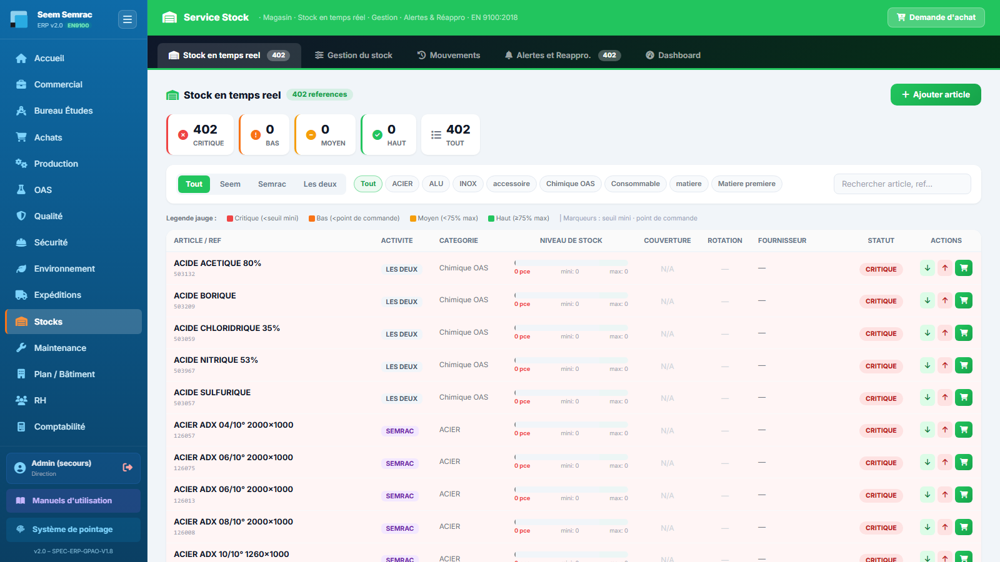
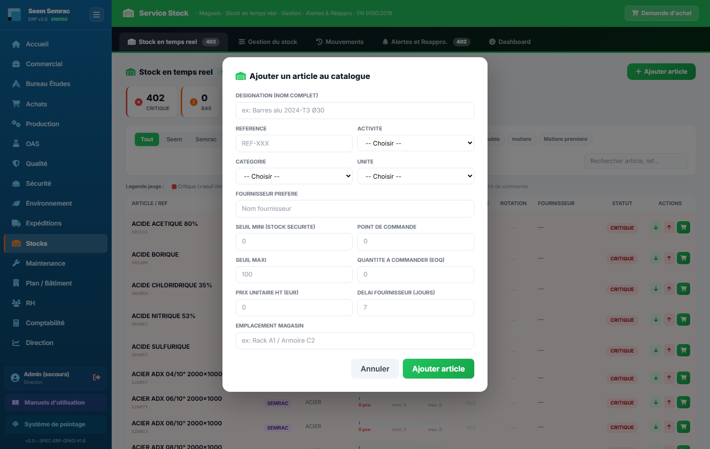
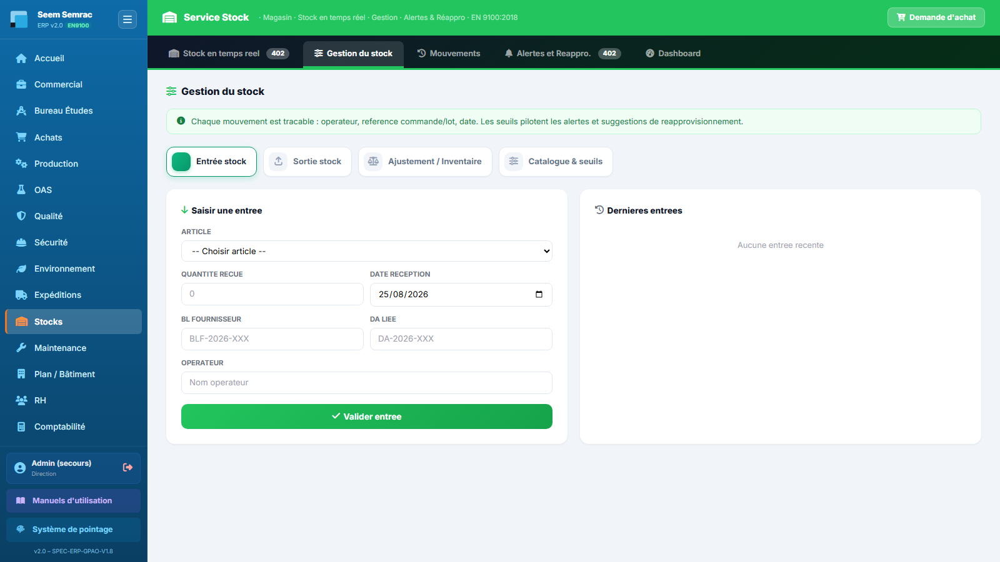
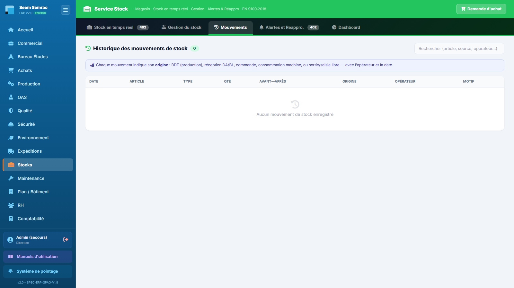
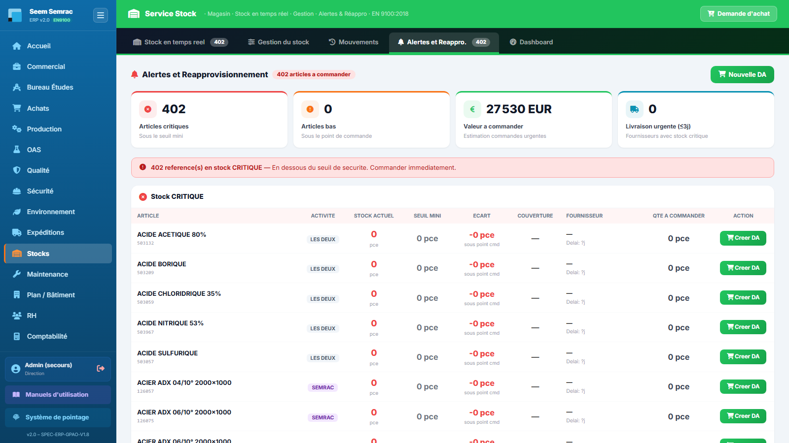
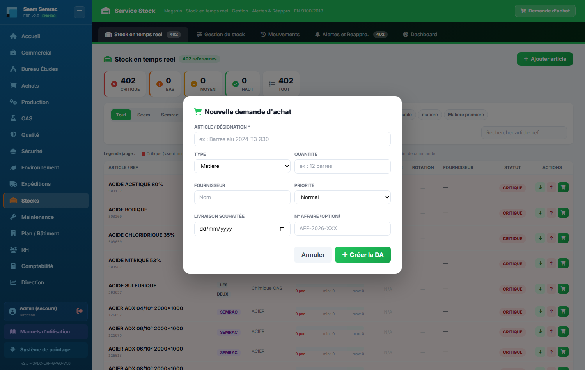
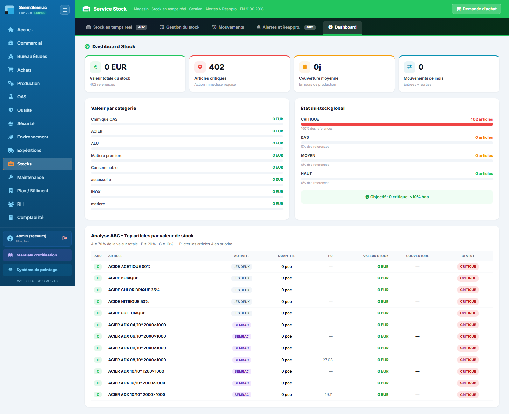

Le service Stocks est le magasin de l'entreprise, en vue unifiée Seem + Semrac : niveaux en temps réel de la matière, des consommables et des produits chimiques, saisie des entrées et sorties, journal complet des mouvements, alertes de réapprovisionnement reliées aux Achats. Vous apprendrez ici à lire les jauges de stock, enregistrer un mouvement, régler les seuils et déclencher une demande d'achat quand une référence descend trop bas.
À quoi ça sert. C'est la photographie instantanée du magasin : chaque référence avec sa jauge de niveau, son statut, sa couverture en jours et son fournisseur. C'est l'écran de départ du magasinier : un coup d'œil aux compteurs de statut suffit pour savoir si la journée commence par des réapprovisionnements urgents. C'est aussi ici que l'on ajoute une nouvelle référence au catalogue.
En haut, le titre avec le nombre de références et le bouton vert « Ajouter article ». Dessous, cinq compteurs cliquables qui filtrent le tableau par statut : CRITIQUE, BAS, MOYEN, HAUT et TOUT (retour à la liste complète). Une barre de filtres complète le tri : par activité (Tout / Seem / Semrac / Les deux), par catégorie (Matière première, Consommable, Chimique OAS, Emballage, Sécurité/EPI, Outillage, Pièce rechange — seules les catégories réellement présentes en stock s'affichent) et un champ « Rechercher article, ref… » qui filtre en direct. Une légende rappelle le code couleur des jauges.
Le tableau liste chaque article avec les colonnes Article / Réf, Activité (badge SEEM, SEMRAC ou LES DEUX), Catégorie, Niveau de stock (jauge colorée avec la quantité et l'unité, plus deux traits repères : le seuil mini et le point de commande), Couverture (nombre de jours de stock restant — rouge sous 7 jours, orange sous 14 ; « N/A » si la consommation mensuelle n'est pas renseignée), Rotation (coefficient de rotation annuel : sorties annualisées divisées par le stock moyen, calculé depuis les mouvements, avec l'équivalent en jours de stock), Fournisseur, Statut et Actions. Les lignes en statut critique sont teintées de rouge pâle pour sauter aux yeux.
Dans la colonne Actions, chaque ligne propose deux boutons flèches : Entrée stock (flèche verte vers le bas) et Sortie stock (flèche rouge vers le haut) pour enregistrer un mouvement rapide — l'ERP confirme aussitôt « stock mis à jour ». Sur les seules références CRITIQUE ou BAS, un troisième bouton panier « Créer DA » apparaît : il déclenche une demande d'achat vers les Achats (voir l'onglet Alertes et Réappro.).


| Champ | Saisie | Obligatoire | Explication |
|---|---|---|---|
| Désignation (nom complet) | Texte (ex : Barres alu 2024-T3 Ø30) | Non | Nom de l'article tel qu'il apparaîtra partout dans le service. |
| Référence | Texte (REF-XXX) | Non | Référence interne ; elle fait aussi le lien avec le catalogue fournisseurs (voir onglet Gestion). |
| Activité | Liste : Seem / Semrac / both (les deux) | Non | Site(s) qui consomment l'article ; alimente le badge et le filtre d'activité. |
| Catégorie | Liste : matière première, consommable, chimique, emballage, sécurité, outillage, pièce rechange | Non | Famille de l'article ; alimente les filtres et la répartition de valeur du Dashboard. |
| Unité | Liste : kg, L, pcs, m, bobine, bouteille, rouleau, paire, palette | Non | Unité de comptage utilisée par toutes les jauges et saisies. |
| Fournisseur préféré | Texte | Non | Fournisseur proposé par défaut lors des demandes d'achat. |
| Seuil mini (stock sécurité) | Nombre | Non (fortement recommandé) | En dessous, l'article passe CRITIQUE : commander immédiatement. |
| Point de commande | Nombre | Non (fortement recommandé) | En dessous, l'article passe BAS : planifier l'approvisionnement. |
| Seuil maxi | Nombre | Non (fortement recommandé) | Capacité cible de stockage ; sert de référence à la jauge (100 %). |
| Quantité à commander (EOQ) | Nombre | Non | Quantité économique proposée par défaut quand on crée une DA depuis une alerte. |
| Prix unitaire HT (EUR) | Nombre | Non | Sert à valoriser le stock (Dashboard) et à estimer le montant des commandes. |
| Délai fournisseur (jours) | Nombre (7 par défaut) | Non | Délai de livraison habituel ; alimente l'alerte « Livraison urgente ». |
| Emplacement magasin | Texte (ex : Rack A1 / Armoire C2) | Non | Où trouver physiquement l'article dans le magasin. |
À quoi ça sert. C'est l'atelier de saisie du magasin : on y enregistre les flux physiques — entrées à la réception, sorties vers la production, régularisations d'inventaire — et on y règle le paramétrage du catalogue (seuils, réappro automatique). Chaque mouvement saisi ici est traçable : opérateur, référence de commande ou de lot, date. Les seuils réglés ici pilotent les alertes et les suggestions de réapprovisionnement de tout le service.
Un bandeau vert rappelle la règle de traçabilité, puis quatre boutons à icône colorée servent de sous-onglets : Entrée stock, Sortie stock, Ajustement / Inventaire et Catalogue & seuils. Les trois premiers présentent le même agencement : le formulaire de saisie à gauche, un rappel des derniers mouvements du même type à droite.

Pour enregistrer une réception de marchandise. Le formulaire « Saisir une entrée » demande : l'article (liste déroulante affichant le stock actuel de chacun), la quantité reçue, la date de réception (aujourd'hui par défaut), le BL fournisseur (ex : BLF-2026-XXX), la DA liée (ex : DA-2026-XXX) et l'opérateur. Le bouton « Valider entrée » enregistre le mouvement — confirmation « Entrée validée. Stock et historique mis à jour. » Le panneau « Dernières entrées » à droite affiche les cinq réceptions les plus récentes (article, date, quantité, opérateur).
Pour sortir de la matière ou des consommables du magasin. Le formulaire « Saisir une sortie » demande : l'article, la quantité sortie, la date, la référence BDT / LOT / CMD (le bon de travail, le lot ou la commande qui consomme — c'est ce lien qui rend la sortie traçable), l'opérateur et le motif parmi quatre : Consommation production, Rebut / casse, Retour fournisseur, Transfert inter-atelier. Le bouton « Valider sortie » enregistre ; le panneau « Dernières sorties » rappelle les six plus récentes avec leur motif.
Pour recaler le stock théorique sur la réalité. Un bandeau jaune précise l'usage : écart entre stock théorique et inventaire physique, perte, ou correction d'erreur de saisie. Le formulaire demande : l'article, le stock réel constaté (la quantité comptée physiquement, pas l'écart), la date d'inventaire, le motif (Inventaire physique périodique, Écart constaté, Perte / détérioration, Correction erreur de saisie) et le responsable inventaire. Le bouton « Valider ajustement » confirme : « Ajustement validé. Écart tracé dans le journal. » À droite, le tableau « Historique complet mouvements » affiche les dix derniers mouvements tous types confondus (Date, Article, Type — badge ENTREE, SORTIE, AJUSTEMENT ou INVENTAIRE —, Quantité, Opérateur).
Le paramétrage de l'approvisionnement, référence par référence. Un tableau éditable liste chaque article avec : Article, Activité, Stock actuel, puis trois champs modifiables directement dans la ligne — Seuil mini, Pt commande, Qté cmd — la case à cocher Réappro auto, le Fournisseur et un bouton disquette Action qui enregistre la ligne (confirmation « Seuils enregistrés », complétée de « réappro auto activé » si la case est cochée). Le bouton « Nouvel article » ouvre le même formulaire d'ajout que l'onglet Stock en temps réel.
En dessous, la section « Catalogue fournisseurs par catégorie » agrège toutes les références déclarées dans les fiches fournisseurs (service Achats), groupées par catégorie (Matière, Accessoires…), avec les colonnes Réf, Désignation, Fournisseur, Prix et Stock réel : si la référence existe aussi dans votre stock, la quantité en magasin s'affiche en vert ; sinon la mention « non stocké » apparaît. C'est le pont entre ce que les fournisseurs proposent et ce que le magasin détient réellement.
À quoi ça sert. C'est le journal de bord complet du magasin : chaque entrée, sortie, réception ou ajustement y est consigné avec son origine, son opérateur et sa date. C'est l'onglet de la traçabilité : en cas de doute sur un niveau de stock, d'audit ou de recherche d'une consommation, c'est ici que l'on remonte le fil.
En haut, le titre avec le nombre total de mouvements et un champ « Rechercher (article, source, opérateur…) » qui filtre la liste en direct. Un bandeau bleu rappelle que chaque mouvement indique son origine : BDT (production), réception DA / BL, commande, consommation machine, ou sortie / saisie libre. Le tableau, trié du plus récent au plus ancien, comprend les colonnes Date, Article, Type (↓ Entrée, ↑ Sortie, ± Ajustement, ↓ Réception), Qté, Avant→Après (le niveau de stock avant puis après le mouvement), Origine (étiquette colorée : BDT, Réception DA, BL, Lot, Commande, Conso. machine, ou « Sortie / saisie libre » pour une saisie manuelle sans référence), Opérateur et Motif.

À quoi ça sert. C'est la liste de courses du magasin : tous les articles passés sous leurs seuils y sont rassemblés, classés par gravité, avec la quantité à commander déjà proposée. De là, un clic crée la demande d'achat qui part chez les Achats. Un stock critique non traité, c'est une production arrêtée : cet onglet se consulte tous les jours.
En haut, le titre avec une pastille rouge « N articles à commander » (si au moins un article est sous ses seuils) et le bouton vert « Nouvelle DA » pour une demande d'achat libre. Quatre tuiles KPI résument la situation : Articles critiques (sous le seuil mini), Articles bas (sous le point de commande), Valeur à commander (estimation en euros des commandes urgentes : quantités à commander × prix unitaires) et Livraison urgente (≤3j) (articles critiques dont le fournisseur livre en 3 jours ou moins — il est encore temps d'être livré vite).
Suivent jusqu'à deux tableaux : Stock CRITIQUE, précédé d'un bandeau rouge « En dessous du seuil de sécurité. Commander immédiatement. », et Stock BAS, précédé d'un bandeau orange « Point de commande atteint. Planifier l'approvisionnement. ». Les deux partagent les mêmes colonnes : Article, Activité, Stock actuel, Seuil mini, Écart (le manque sous le point de commande), Couverture (jours restants), Fournisseur (avec son délai de livraison), Qté à commander (avec le montant estimé) et le bouton « Créer DA ». Si aucun article n'est en alerte, l'onglet affiche simplement « Tous les stocks sont corrects — Aucune alerte de réapprovisionnement. »


| Champ | Saisie | Obligatoire | Explication |
|---|---|---|---|
| Article / Désignation | Texte (ex : Barres alu 2024-T3 Ø30) | Oui | Ce qu'il faut acheter ; sans désignation, l'ERP refuse la création. |
| Type | Liste : Matière / Outillage / Consommable / Chimique / Sous-traitance | Non | Famille d'achat ; aide les Achats à router la demande. |
| Quantité | Texte libre (ex : 12 barres) | Non | Quantité souhaitée, avec son unité en clair. |
| Fournisseur | Texte | Non | Fournisseur pressenti ; l'acheteur reste libre de le changer. |
| Priorité | Liste : Normal / Urgent / Critique | Non | Niveau d'urgence affiché côté Achats pour prioriser le traitement. |
| Livraison souhaitée | Date | Non | Date à laquelle vous avez besoin de la marchandise. |
| N° affaire (option) | Texte (AFF-2026-XXX) | Non | Rattache l'achat à une affaire cliente pour le suivi des coûts. |
À quoi ça sert. C'est la vue de pilotage du magasin : combien d'argent dort en stock, dans quelles catégories, quelle est la santé globale des niveaux et quels articles concentrent la valeur (analyse ABC). Utile pour la revue hebdomadaire, la préparation des inventaires et les arbitrages d'achats.
Quatre tuiles KPI en tête : Valeur totale du stock (en euros, avec le nombre de références), Articles critiques (action immédiate requise), Couverture moyenne (en jours de production) et Mouvements ce mois (entrées + sorties). Dessous, deux blocs côte à côte : Valeur par catégorie (barres horizontales : où se concentre l'argent immobilisé — matière première, consommables, chimiques…) et État du stock global (répartition des références par statut critique / bas / moyen / haut, en nombre et en pourcentage, avec l'objectif affiché : 0 critique, moins de 10 % bas).
Enfin, le tableau « Analyse ABC — Top articles par valeur de stock » classe les références qui pèsent le plus : la classe A regroupe les articles totalisant 70 % de la valeur du stock, B les 20 % suivants, C les 10 % restants. Colonnes : ABC (badge de classe), Article, Activité, Quantité, PU (prix unitaire), Valeur stock, Couverture et Statut.
